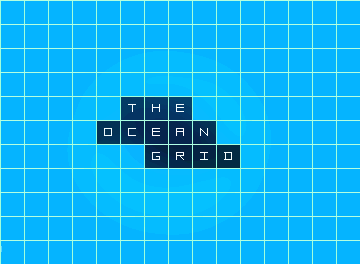
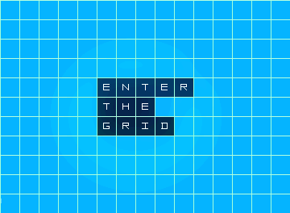
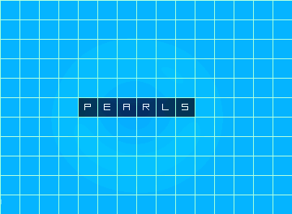
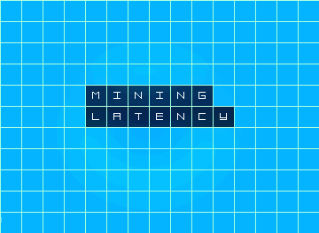
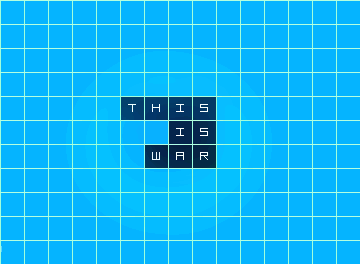
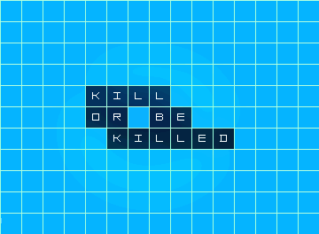
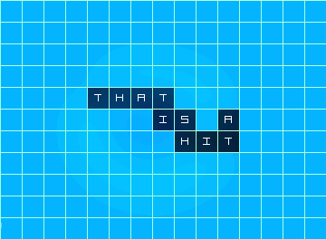
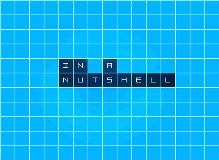
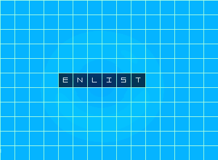

THE OCEAN GRID
In the depths of the Ethereum Blockchain is the heart of the ocean; a universal grid where submarines from all over the world are in constant warfare.
Control over the lucrative business of underwater mining is the only thing that really matters here. Ambition and guts shape this war economy. Submarines battle and sacrifice resources to mine PEARLS; the authentic hearts of the ocean.

Enter the Grid
Commit your submarine to a secret position inside the grid and stay under the radar waiting for the perfect moment to mine or attack.
At this point your position is hidden and your engine is off. This is good if you don't want to be visible and attract attacks; but not if you want to mine pearls.

Pearls, Hearts of the Ocean
The creation of Pearls is a magical event that requires computational power and ocean waves. Submarines are good at mining Pearls, just start the engine and enjoy the show, all the heavy lifting is done behind the scenes!
ATTENTION: Turning the engine on will reveal the secret position you commited before to the grid. If you are visible, you are a target.

Mining latency
A transaction to initialize the mining process has two inputs:
- BLOCK HEIGHT, that is: for how many block confirmations (on this transaction) the submarine will mine and stay visible before turning the engine off again. Minimum block height is 24.
- PEARL STAKE.
The potential mining gains are equal to the pearl stake times the block height.
i.e. If a submarine starts mining with a pearl stake of 60 and is visible for 24 block confirmations without being attacked, the owner will be credited 1440 pearls.

This is war
The ocean grid is a war zone and submarines are hidden everywhere. If you are thinking of turning the engine of your submarine on and start mining some pearls, be careful, there could be submarines ready to attack, right next to you.

Kill or be killed
If your position is hidden but a hard to ignore target appears near you, attacking is an option. Send a transaction with target coordenates and fire a missile but keep in mind that not all attacks reach their target and missiles are not a free resource.
Inside the grid, distance is measured in grid steps. The speed rate of a missile is one grid step per block confirmation. Therefore, a submarine missile that is n steps away from its target will take n block confirmations to impact.

that's a hit!
If a missile impacts a visible submarine, the attacker will own the potential mining gains of his victim up to the moment of impact.
Attacking will make you visible on the grid. i.e. If you fire a missile 15 grid steps away from a target, your submarine will be visible on the grid for 15 block confirmations. During this period, other submarines can attack you as well. However, an impact in this scenario only results in the neutralization of your attack.

Let's break it down
Commit to enter or change a position. Mine to profit. Attack to make a statement. Submarines are externally owned Ethereum accounts that fire transactions to the Universal Ocean Grid: an smart contract with 80,000 positions (200 x 400 grid) that will live for as long as the Ethereum Blockchain does.
Use pearls (ERC-20 tokens) to buy missiles, use missiles to get pearls and repeat the cycle. As your mining business grows you might need to upgrade your attacks and invest in better but more expensive missiles that can go up to four times the speed of regular ones.
Pearls collected from missile sales are automatically burned to stabilize their supply and value.
Submarines rank up the charts as they get more pearls and attacks in their records. Big pockets don't matter much here and whales are not welcome. War instinct and luck will tell how successful you become.

THE WAR IS IN YOUR POCKET
The minimal design and not-so-complex blueprint of the game is helping us build a mobile interface that will unlock full flexibility and immersion. The initial release will be available on iOS and Android platforms.
Enlist to-day and don't miss an announcement!
{kind=link}
{kind=link}
{kind=link}
{kind=link}
{kind=link}
{kind=link}
{kind=link}
{kind=link}
{kind=link}